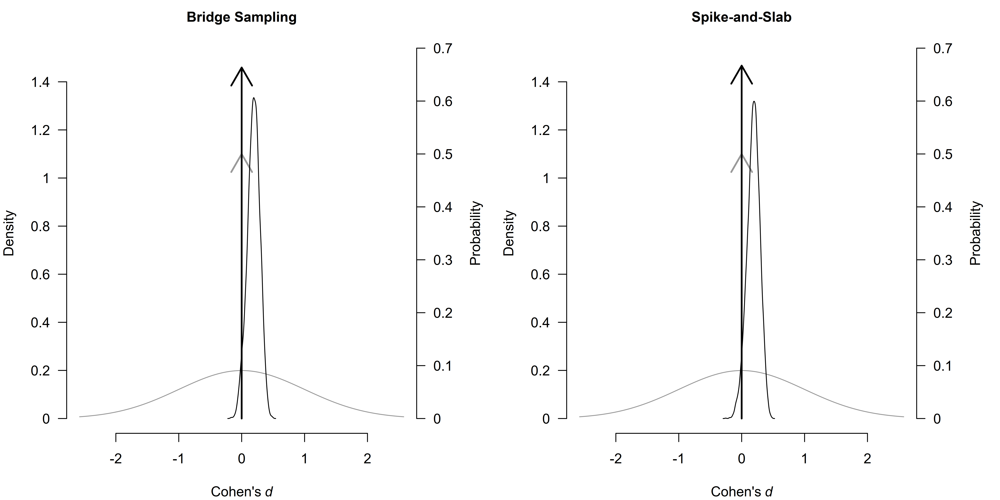
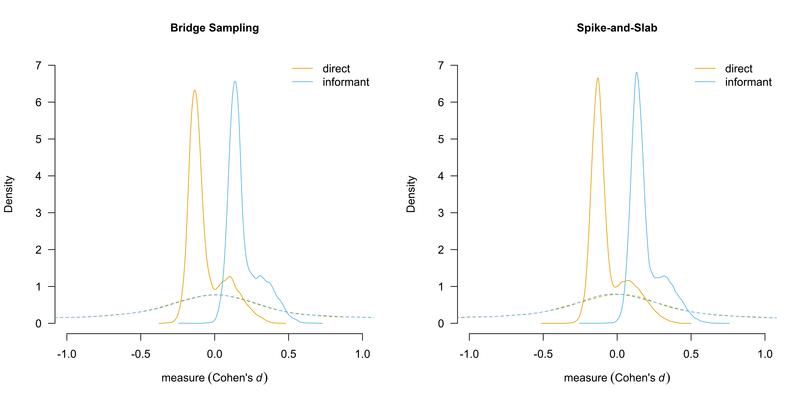

Fast Robust Bayesian Meta-Analysis via Spike and Slab Algorithm
František Bartoš
2025-07-22
Source:vignettes/FastRoBMA.Rmd
FastRoBMA.RmdThis vignette demonstrates how to fit a robust Bayesian
model-averaged meta-regression (RoBMA.reg()) in the
RoBMA R package using two different algorithms:
- Bridge sampling (the current default,
algorithm = "bridge"), - Spike-and-slab (
algorithm = "ss").
We compare both approaches in terms of fitting time, side-by-side summaries, marginal summaries, and illustrative plots. We then discuss advantages and disadvantages of the spike-and-slab approach, especially for complex meta-regression with multiple moderators. We will use the example from (Bartoš et al., 2025) which focuses on the effect of household chaos on child executive functions with two moderators: assessment type (measure: “direct” vs. “informant”) and mean child age (age). See (Bartoš et al., 2025) and Robust Bayesian Model-Averaged Meta-Regression vignette for in depth discussion of the example and guidance on applying robust Bayesian model-averaged meta-regression. Here, we show that both algorithms produce essentially identical results; however, spike-and-slab can be much faster when many moderators (hence many models) are present. Note that the spike-and-slab algorithm can be also applied in the case of hierarchical (3-lvl) models (see Hierarchical Bayesian Model-Averaged Meta-Analysis) which makes hierarchical approximate selection models feasible.
Fitting Models via Bridge Sampling vs. Spike-and-Slab
Below, we specify and fit the same meta-regression with publication bias adjustment using the two algorithms. First, we load the package and inspect the data set.
library(RoBMA)
data("Andrews2021", package = "RoBMA")
head(Andrews2021)
#> r se measure age
#> 1 0.070 0.04743416 direct 4.606660
#> 2 0.033 0.04371499 direct 2.480833
#> 3 0.170 0.10583005 direct 7.750000
#> 4 0.208 0.08661986 direct 4.000000
#> 5 0.270 0.02641969 direct 4.000000
#> 6 0.170 0.05147815 direct 4.487500Second, we estimate the meta-regression models using the two
algorithms. We use the same formula, data, and settings for both
algorithms. The bridge sampling approach is specified with
algorithm = "bridge", while the spike-and-slab approach is
specified with algorithm = "ss". We use the current default
settings for the number of chains, samples, burn-in, and adaptation
settings for the bridge algorithm, however, we significantly increase
the number of chains and samples for the spike-and-slab algorithm to
ensure convergence. This is important as the spike-and-slab algorithm
estimates the complete model-averaged ensemble within a single MCMC run,
while the bridge algorithm estimates each model separately and then
combines them. We also time the estimation process for comparison using
the Sys.time() function.
## Bridge sampling
t1_bridge <- Sys.time()
fit_RoBMA.bridge <- RoBMA.reg(
formula = ~ measure + age,
data = Andrews2021,
algorithm = "bridge",
chains = 3,
sample = 5000,
burnin = 2000,
adapt = 500,
parallel = TRUE
)
t2_bridge <- Sys.time()
## Spike-and-slab
t1_ss <- Sys.time()
fit_RoBMA.ss <- RoBMA.reg(
formula = ~ measure + age,
data = Andrews2021,
algorithm = "ss",
chains = 6,
sample = 10000,
burnin = 2500,
adapt = 2500,
parallel = TRUE
)
t2_ss <- Sys.time()Once the models are fitted, we compute the time taken to fit each model.
bridge_time <- difftime(t2_bridge, t1_bridge, units = "mins")
ss_time <- difftime(t2_ss, t1_ss, units = "mins")Running on a high-performing laptop with a 6c/12t Intel CPU, the bridge sampling approach took about 24 minutes, while the spike-and-slab approach took ~0.58 minutes. This highlights the efficiency advantage of the spike-and-slab algorithm as the number of moderators (and hence the number of potential models) grows. This is especially important as the number of models grows following 36x2^p, where p corresponds the number of moderators. For example, with 3 moderators, the number of models is 36x2^3 = 288, and with 4 moderators, the number of models is 36x2^4 = 576 (more is essentially unattainable on a consumer PC).
Comparing Summary Outputs
Below we compare the numeric summaries using the
summary() for each fitted object.
summary(fit_RoBMA.bridge)
#> Call:
#> RoBMA.reg(formula = ~measure + age, data = Andrews2021, algorithm = "bridge",
#> chains = 3, sample = 5000, burnin = 2000, adapt = 500, parallel = TRUE)
#>
#> Robust Bayesian meta-regression
#> Components summary:
#> Models Prior prob. Post. prob. Inclusion BF
#> Effect 72/144 0.500 0.337 5.080000e-01
#> Heterogeneity 72/144 0.500 1.000 1.043245e+23
#> Bias 128/144 0.500 0.965 2.796700e+01
#>
#> Meta-regression components summary:
#> Models Prior prob. Post. prob. Inclusion BF
#> measure 72/144 0.500 0.950 18.955
#> age 72/144 0.500 0.154 0.181
#>
#> Model-averaged estimates:
#> Mean Median 0.025 0.975
#> mu 0.064 0.000 0.000 0.328
#> tau 0.212 0.208 0.149 0.297
#> omega[0,0.025] 1.000 1.000 1.000 1.000
#> omega[0.025,0.05] 0.999 1.000 1.000 1.000
#> omega[0.05,0.5] 0.998 1.000 1.000 1.000
#> omega[0.5,0.95] 0.996 1.000 1.000 1.000
#> omega[0.95,0.975] 0.996 1.000 1.000 1.000
#> omega[0.975,1] 0.997 1.000 1.000 1.000
#> PET 2.046 2.487 0.000 3.292
#> PEESE 1.006 0.000 0.000 9.780
#> The estimates are summarized on the Cohen's d scale (priors were specified on the Cohen's d scale).
#> (Estimated publication weights omega correspond to one-sided p-values.)
#>
#> Model-averaged meta-regression estimates:
#> Mean Median 0.025 0.975
#> intercept 0.064 0.000 0.000 0.328
#> measure [dif: direct] -0.125 -0.129 -0.214 0.000
#> measure [dif: informant] 0.125 0.129 0.000 0.214
#> age 0.000 0.000 -0.044 0.044
#> The estimates are summarized on the Cohen's d scale (priors were specified on the Cohen's d scale).
summary(fit_RoBMA.ss)
#> Call:
#> RoBMA.reg(formula = ~measure + age, data = Andrews2021, algorithm = "ss",
#> chains = 6, sample = 10000, burnin = 2500, adapt = 2500,
#> parallel = TRUE)
#>
#> Robust Bayesian meta-regression
#> Components summary:
#> Prior prob. Post. prob. Inclusion BF
#> Effect 0.500 0.333 0.499
#> Heterogeneity 0.500 1.000 Inf
#> Bias 0.500 0.966 28.340
#>
#> Meta-regression components summary:
#> Prior prob. Post. prob. Inclusion BF
#> measure 0.500 0.953 20.307
#> age 0.500 0.151 0.178
#>
#> Model-averaged estimates:
#> Mean Median 0.025 0.975
#> mu 0.062 0.000 0.000 0.331
#> tau 0.211 0.207 0.148 0.297
#> omega[0,0.025] 1.000 1.000 1.000 1.000
#> omega[0.025,0.05] 0.999 1.000 1.000 1.000
#> omega[0.05,0.5] 0.998 1.000 1.000 1.000
#> omega[0.5,0.95] 0.996 1.000 1.000 1.000
#> omega[0.95,0.975] 0.996 1.000 1.000 1.000
#> omega[0.975,1] 0.996 1.000 1.000 1.000
#> PET 2.059 2.504 0.000 3.301
#> PEESE 1.008 0.000 0.000 10.123
#> The estimates are summarized on the Cohen's d scale (priors were specified on the Cohen's d scale).
#> (Estimated publication weights omega correspond to one-sided p-values.)
#>
#> Model-averaged meta-regression estimates:
#> Mean Median 0.025 0.975
#> intercept 0.062 0.000 0.000 0.331
#> measure [dif: direct] -0.125 -0.128 -0.214 0.000
#> measure [dif: informant] 0.125 0.128 0.000 0.214
#> age 0.000 0.000 -0.045 0.043
#> The estimates are summarized on the Cohen's d scale (priors were specified on the Cohen's d scale).The posterior probabilities for each component are very similar. For example, the posterior probability of including the measure moderator is ≈ 0.95 in both fits, and the probability of including the age moderator is ≈ 0.15. The posterior mean estimates for mu, tau, and the regression coefficients are essentially the same (differences are within the 3rd decimal place). Inclusion Bayes factors differ very slightly (0.499 vs. 0.508, etc.) but not in any meaningful or qualitatively different way. Hence, both algorithms yield consistent inferences but differ drastically in computation time when there are many models to evaluate. Visual inspection of the posterior distributions for the effect size and the moderators reveals that the two algorithms produce nearly identical results.
par(mfrow = c(1, 2), mar = c(4, 4, 2, 5))
plot(fit_RoBMA.bridge, parameter = "mu", prior = TRUE, main = "Bridge Sampling")
plot(fit_RoBMA.ss, parameter = "mu", prior = TRUE, main = "Spike-and-Slab")
Next, we compare the marginal estimates for the moderators at each
level of measure, and age (centered at -1 SD, 0 SD, +1 SD,
respectively). These “marginal means” clarify the estimated
model-averaged effect for each factor level. We use the
marginal_summary() function to extract these summaries.
marginal_summary(fit_RoBMA.bridge)
#> Call:
#> RoBMA.reg(formula = ~measure + age, data = Andrews2021, algorithm = "bridge",
#> chains = 3, sample = 5000, burnin = 2000, adapt = 500, parallel = TRUE)
#>
#> Robust Bayesian meta-analysis
#> Model-averaged marginal estimates:
#> Mean Median 0.025 0.975 Inclusion BF
#> intercept 0.064 0.000 0.000 0.328 0.508
#> measure[direct] -0.061 -0.108 -0.208 0.246 0.844
#> measure[informant] 0.188 0.156 0.000 0.458 8.950
#> age[-1SD] 0.064 0.000 -0.030 0.326 0.300
#> age[0SD] 0.064 0.000 0.000 0.328 0.356
#> age[1SD] 0.064 0.000 -0.043 0.335 0.307
#> The estimates are summarized on the Cohen's d scale (priors were specified on the Cohen's d scale).
#> mu_age[0SD]: There is a considerable cluster of posterior samples at the exact null hypothesis values. The Savage-Dickey density ratio is likely to be invalid.
#> mu_age[0SD]: There is a considerable cluster of prior samples at the exact null hypothesis values. The Savage-Dickey density ratio is likely to be invalid.
marginal_summary(fit_RoBMA.ss)
#> Call:
#> RoBMA.reg(formula = ~measure + age, data = Andrews2021, algorithm = "ss",
#> chains = 6, sample = 10000, burnin = 2500, adapt = 2500,
#> parallel = TRUE)
#>
#> Robust Bayesian meta-analysis
#> Model-averaged marginal estimates:
#> Mean Median 0.025 0.975 Inclusion BF
#> intercept 0.062 0.000 0.000 0.331 0.492
#> measure[direct] -0.063 -0.108 -0.211 0.241 0.781
#> measure[informant] 0.187 0.154 0.000 0.460 8.639
#> age[-1SD] 0.062 0.000 -0.031 0.328 0.298
#> age[0SD] 0.062 0.000 0.000 0.331 0.310
#> age[1SD] 0.062 0.000 -0.047 0.340 0.296
#> The estimates are summarized on the Cohen's d scale (priors were specified on the Cohen's d scale).
#> mu_age[0SD]: There is a considerable cluster of posterior samples at the exact null hypothesis values. The Savage-Dickey density ratio is likely to be invalid.
#> mu_age[0SD]: There is a considerable cluster of prior samples at the exact null hypothesis values. The Savage-Dickey density ratio is likely to be invalid.Again, the mean estimates differ only in the third decimal place and the differences in the inclusion BF are qualitatively equal (e.g., 8.950 vs. 8.639 for the inclusion Bayes factor at the measure[informant] level). A visual comparison of the estimated marginal means reveals that the two algorithms produce nearly identical results.
par(mfrow = c(1, 2))
marginal_plot(fit_RoBMA.bridge, parameter = "measure", conditional = TRUE, prior = TRUE, xlim = c(-1, 1), ylim = c(0, 7), main = "Bridge Sampling")
marginal_plot(fit_RoBMA.ss, parameter = "measure", conditional = TRUE, prior = TRUE, xlim = c(-1, 1), ylim = c(0, 7), main = "Spike-and-Slab")
Conclusion
Spike-and-slab (algorithm = "ss") is much faster than
bridge sampling (algorithm = "bridge") for estimating
robust Bayesian meta-analysis model ensembles. This advantage further
extends in cases of meta-regression models involving many predictors.
Despite huge differences in computation time, both algorithms produce
nearly identical inferences for model-averaged effect sizes, moderator
effects, and posterior probabilities. Currently, the
"bridge" algorithm remains the default option in the
RoBMA R package but future major releases will switch to
the "ss" algorithms the new default (and modify the default
MCMC settings).